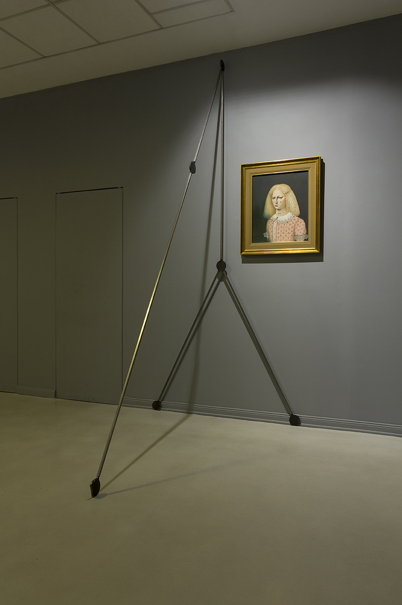
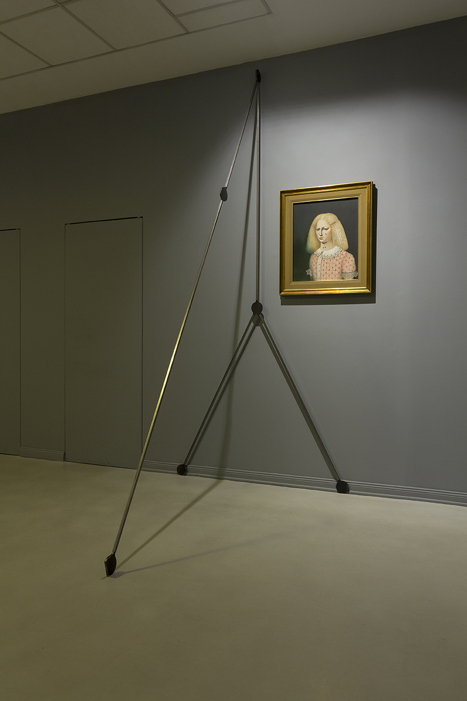
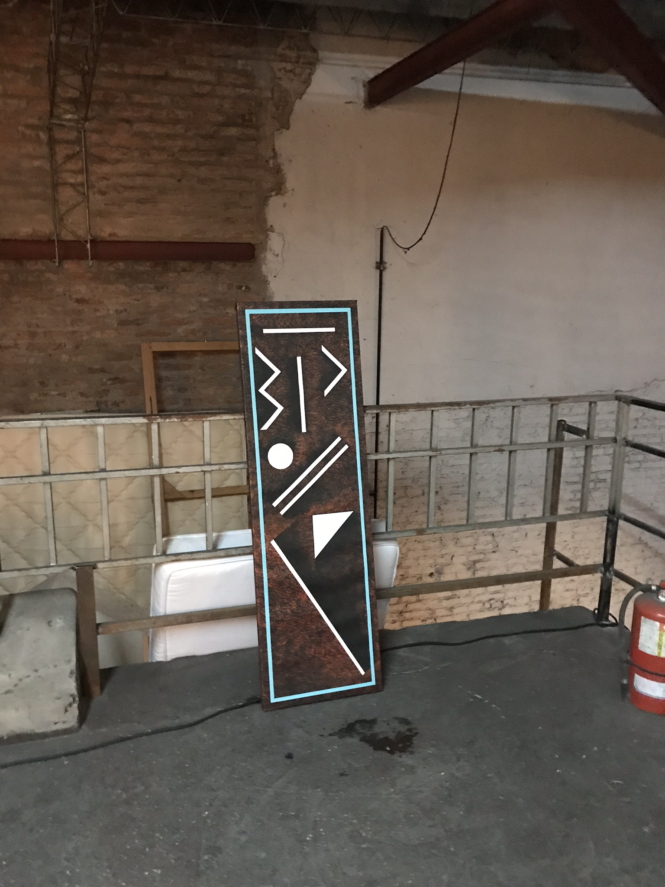
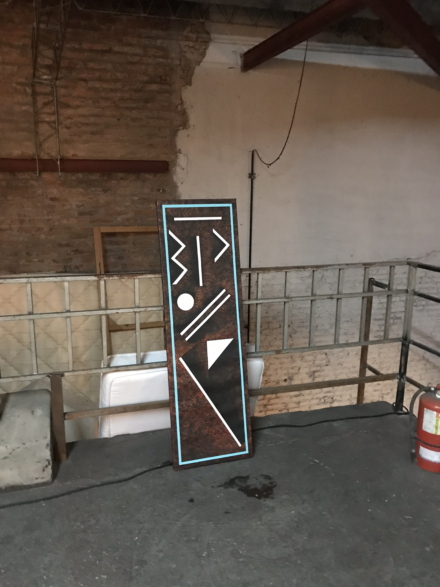
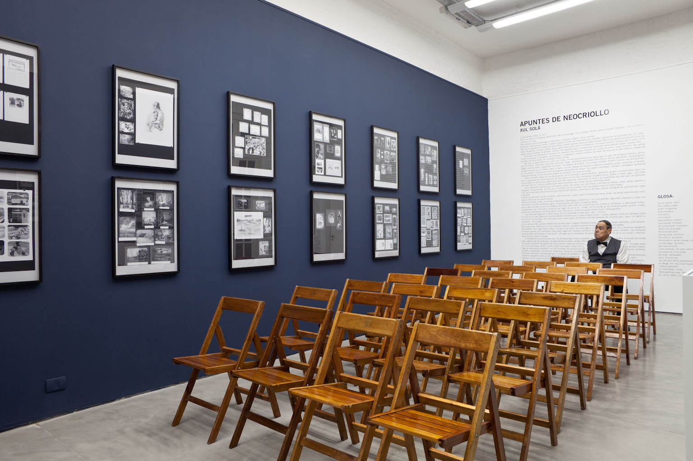
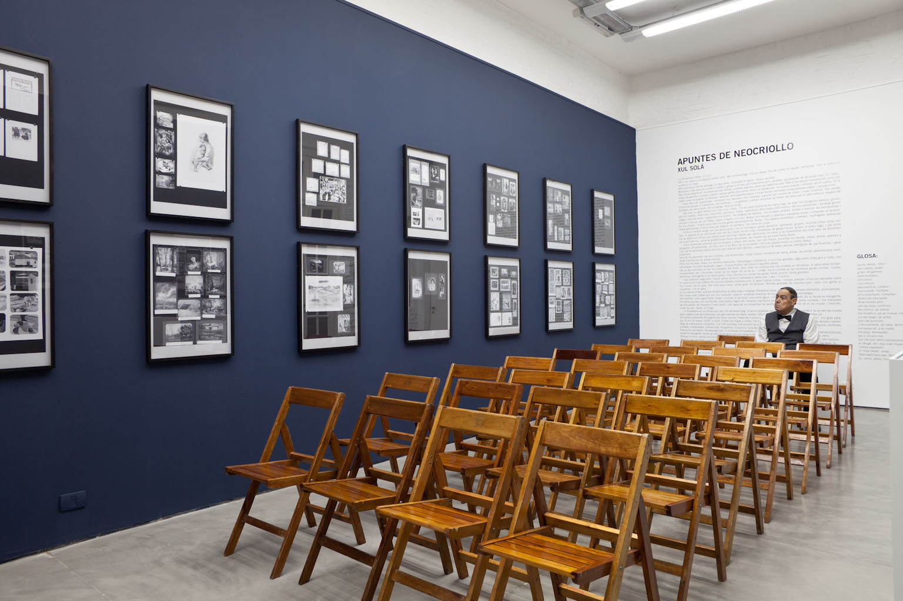
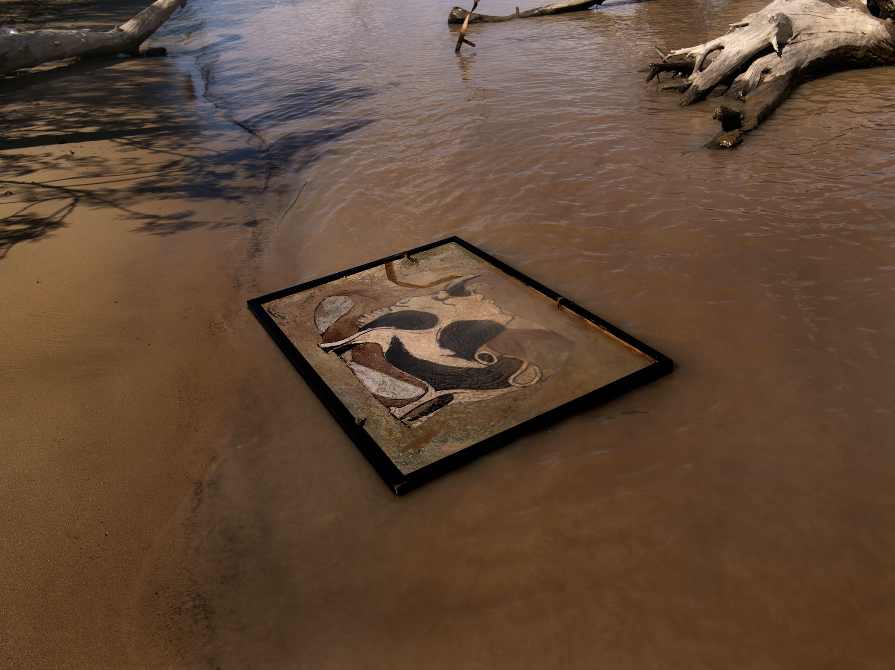
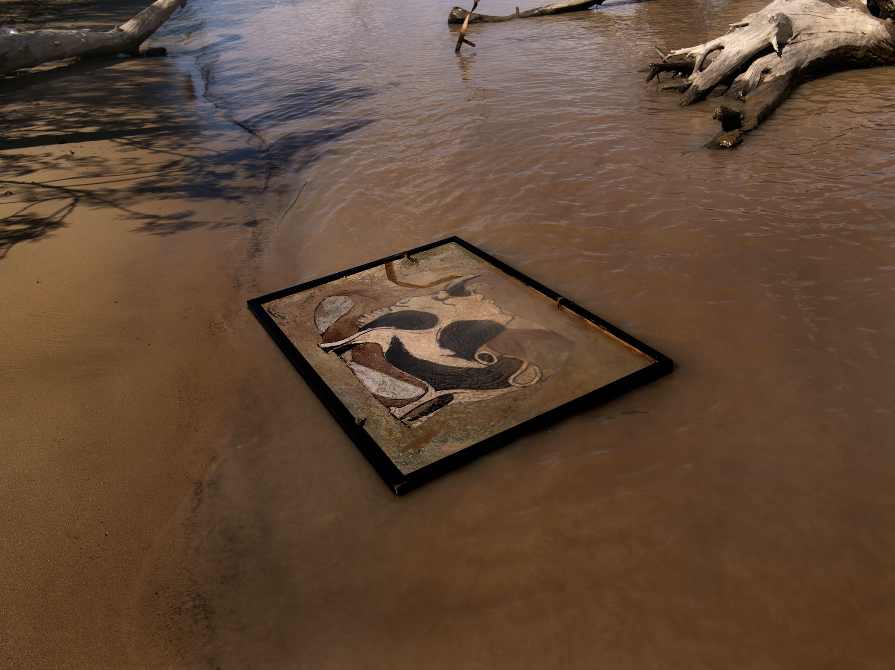
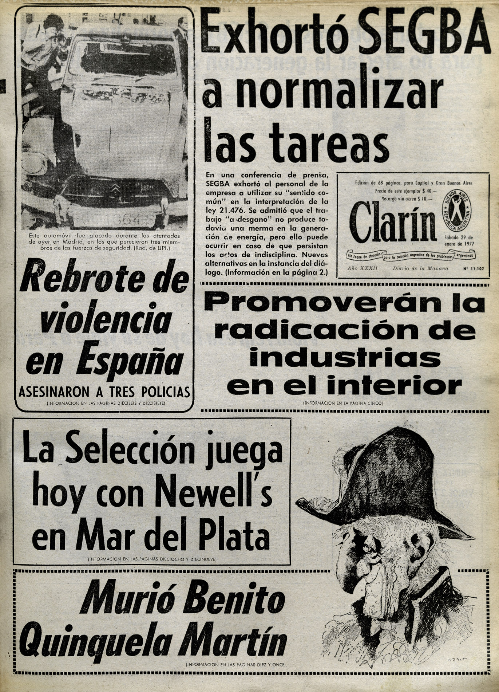
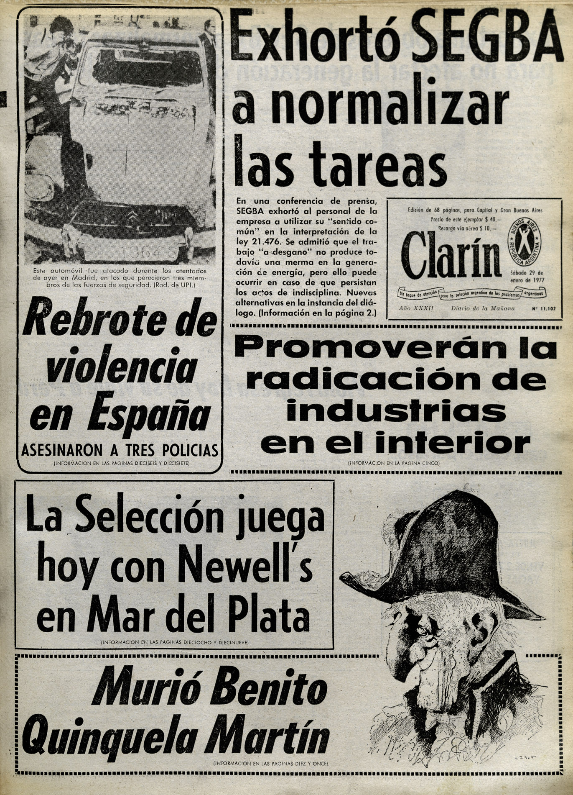

Las personas habitan sus biografías como habitan sus casas
Objeto móvil recomendado a las familias
Las personas habitan sus biografías como habitan sus casas II
¡O descifras mi secreto o te devoro!
No hay futuro sin memoria
Borderland
¿Por qué odiaba tanto a Fernanda Laguna?
Museo del fondo del Río Paraná
Geografía Plástica Argentina
1931
Al solcito
Links
Las personas habitan sus biografías como habitan sus casas
Galería Isla Flotante, Buenos Aires
2018
La muestra parte de la exhibición de un archivo de más de sesenta fotos sobre casas-museos de diferentes partes del mundo, y sus diferentes estrategias para mostrar objetos y vida personal. Montadas sobre una escalera, funcionaban como antesala para el encuentro con una serie de sillas ortopédicas y obras realizadas por alumnos de pintura de la Asociación Civil Nexo, dedicada a la prevención y tratamiento de enfermedades de transmisión sexual en Buenos Aires. Entre lo doméstico, la enfermedad y el museo, aparecía una biografía a través de los objetos.
Objeto móvil recomendado a las familias
Fundación osde, Buenos Aires
2017
Curaduría: Santiago Villanueva
Esta reunión de obras respeta una memoria inestable del surrealismo o el superrealismo en Argentina.
El fracaso, para la historia, del primer y único grupo surrealista argentino, el grupo Orión nacido en 1939, permite abordar caminos que desarman lo programático de cualquier vanguardia internacional. La falta de toma de posición para formular una nueva actitud los separó de espacios de trincheras como los que sostuvieron los concretos, que desde su claridad deshabilitaron lugares de acción. Podemos pensar a este grupo de artistas como un conjunto que representa lo aspiracional de los movimientos de avanzada en Argentina. La indecisión de Orión permitió que el clima onírico y el desvalance con lo real perdure con cierto anamorfismo en las décadas siguientes.
El surrealismo sobrevive como un momento de investigación adolescente, donde se mezcla una actitud rupturista con una seguridad en las formas, un momento de indecisión y dudas, volcados en una mecánica inesperada.
Las obras aquí reunidas por dos meses permanecen juntas por la complicidad que generan entre ellas para pensar un momento histórico, un estadio de formación personal y una proyección de un programa vanguardista pensado a posteriori, sin la incomodidad y pretensión de un manifiesto.


 



¡O descifras mi secreto o te devoro!
Galería Isla Flotante, Buenos Aires
2016
Recuperando la tradición del surrealismo en Argentina, la exposición investiga las influencias de dicha vanguardia en los movimientos políticos de los años cuarenta, particularmente en el Peronismo. Mediante la reunión de una serie de obras originales de artistas Argentinos de dicha generación, compradas por mercadolibre.com, la muestra se pregunta si existe algun tipo de influencia desde el arte hacia la política. El título de la exhibición proviene de los escritos sobre geografía metafísica de Carlos Astrada, base intelectual del gobierno de Juan Domingo Perón.


¿Por qué odiaba tanto a Fernanda Laguna?
Kupfer, Londres- El altillo dorado, Buenos Aires
2018
Santiago Villanueva con Veronica Madanes, Sebastian Desbats, Laura Códega, Básica TV, Debora Delmar, Claudia del Río, Maruki Nowacki, Fátima Pecci Carou, Diana Aisenberg, Maximiliano Masuelli, Ad Minoliti y Fernanda Laguna.
A mis 19 años escribí un texto en contra de la artista Fernanda Laguna. Era una larga conferencia de cuatro páginas que se ocupaba de criticar, con un vetusto tono nacionalista, cada uno de sus proyectos, pero también su postura general. La conferencia menciona muchos artistas y enrosques locales, pero a la vez presenta la ilusión de un artista que se forma con el contraste y el odio. Un anti-referente, eso era Fernanda para mi en aquel momento.
La obra de Laguna se planta entre sus pinturas, su poesía y la creación de proyectos con formas muy variadas, pero que generalmente involucran un espacio físico. Fernanda creó varios espacios de encuentro y exhibición desde 1998 en Buenos Aires, y muchos la consideramos como un referente de la curaduría. Sus espacios mezclan la espontaneidad de un encuentro casual con la planificación de un evento, algo de por sí bastante difícil de lograr.
Pero en este texto del 2009 me preguntaba por todos los disgustos que su trabajo me generaba, enumeraba: sociabilidad imaginaria, amiguismo estúpido. Me molestaba lo que sería luego algo importante para mí, la conformación de proyectos con las personas más próximas. Tal vez en ese momento debía pelear con alguien para tener una idea más clara. La conferencia es retrógrada, con cierta intención de provocación… copiando y pegando textos de otros, como un collage desesperado.
¿Cómo solucionar el odio? Como mediadoras y juezas las obras presentan resoluciones medias, entre la conquista y la sorpresa. Cada una ocupa un rol asignado en su banca, están ahí para colaborar. Son, tal vez, las obras que surgen de ese primer enojo, las que probablemente también odiaba hace diez años, y las que hoy me acompañan y atraen.
 



1931
Abate Galería, Buenos Aires
2012
Paneles en blanco y negro enlazan una serie de imágenes de una historia del arte regional a partir de dos hechos ocurridos en 1931 en la ciudad de Azul, provincia de Buenos Aires, Argentina. La publicación en la revista Azul de los primeros apuntes para el neocriollo de Xul Solar, intento vanguardista por crear una lengua que una español y portugués, y la pintura “Malón” de Alberto López Claro, representando un imaginario decimonónico aún activo en muchos lugares del interior del país. Tradición y vanguardia conviven en una misma geografía de manera simultánea, sin tener contacto y a pocos metros de distancia.


 



Al Solcito
Premio Braque, Muntref, Buenos Aires
2015
Este proyecto parte de una pintura realizada en 1922 por Fernando Fader titulada Al solcito. La obra pertenece al patrimonio del Museo Nacional de Bellas Artes de Buenos Aires y fue cedida en préstamo a Casa de Gobierno donde permaneció un largo tiempo en el despacho del Presidente de la Nación. Allí la vieron Juan Domingo Perón, José María Guido, Arturo Frondizi, Arturo Umberto Illia, Juan Carlos Onganía, entre otros.
Al solcito fue telón de fondo de reuniones de gabinete, de visitas de embajadores, de decisiones políticas y formó parte de la vida diaria de numerosos presidentes que compartieron esa única imagen durante sus mandatos.
¿Por qué esta pintura, ubicada en un lugar central del despacho presidencial, logró sobrevivir tantos años en un mismo espacio? ¿Con qué proximidad se relacionaron los diferentes presidentes y la imagen?
El registro fotográfico perteneciente al Archivo General de la Nación la muestra como una imagen invisible pero persistente en la vida política entre los años cuarenta y sesenta.


Borderland
Centro Cultural Recoleta, Buenos Aires
2016
Curador: Santiago Villanueva
Esta exhibición reúne a tres artistas nacidos entre 1987 y 1990 en San Pablo, Villa Gesell y Montevideo, pero que por diversas cuestiones residen o residieron en Buenos Aires durante un largo periodo de tiempo. Sus trabajos, técnicamente distanciados, refieren a tópicos generacionales, pero solo como un primer indicio o como punto de partida.
Las obras involucran el cuerpo, la nocturnidad y la calle, están acompañadas de algunas láminas de la retratista de niños y locos Mariette Lydis, muy activa durante los años cincuenta y sesenta, y una serie de objetos ortopédicos, que enfatizan el recorrido de las obras desde el idilio luminoso del recién llegado a las limitaciones en el paisaje del envejecimiento.
Geografía Plástica Argentina
CIFO, Miami
2013
En 1958 el crítico Romualdo Brughetti publica su libro Geografía Plástica Argentina: una recopilación de artículos dispersos vinculados al paisaje. A primera vista sus planteos parecen herederos
de los escritos nacionalistas de principios de siglo, pero sin embargo Brughetti plantea una hipótesis que batalla contra los hermetismos estancados en la idea de nación: no existe un paisaje único, un territorio esclarecedor que represente “el espíritu humano de pertenencia”. Es la luz el rasgo diferencial que hace posible distinguir una pintura de Bolivia, Ecuador o Argentina. Es la luminosidad la frontera nacional de la pintura, y es por esto que no existe una pintura de paisaje que dé cuenta de un territorio tan amplio y diverso como el argentino. Brughetti es uno de los primeros críticos de Latinoamérica que plantea una visión regionalista para el arte latinoamericano y propone una nueva geografía para la pintura cuyos límites no son políticos sino lumínicos.
Las siguientes imágenes recorren y ordenan las pinturas presentadas en Geografía Plástica Argentina, dan cuenta de los planteos de Brughetti y revelan visualmente un principio que escapa a las corrientes nacionalistas que redujeron “lo argentino” a un cardo o a un gaucho.
Las personas habitan sus biografías como habitan sus casas II
Arte BA, Buenos Aires
2018
Museo del Fondo del Río Paraná
2012- actualidad
Este museo propone una nueva idea para el patrimonio: las obras son exhibidas sobre la superficie del río Paraná (Argentina) donde cambian su materialidad. Sin embargo, no proponemos su destrucción como una condición de exhibición. Pensamos que las obras de la costa del Paraná fueron realizadas para naufragar sus orillas, que no es posible pensar el espeso óleo de un Piccoli o
la aguada tinta de López Claro fuera del barro y la humedad del río.
Un nuevo museo de obras flotantes que circulen sobre la corriente, que se detengan con una piedra, que cambien su dirección con el viento, que giren sobre sí mismas, que se estanquen en un determinado punto de la costa. La primera exhibición de obras argentinas en un espacio acorde a ellas.


 


No hay futuro sin memoria
Abate Galería, Buenos Aires
2014
Este proyecto trabajó a partir de la recopilación de una serie de obituarios de artistas argentinos entre principios de los años cuarenta y finales de los años noventa. Presentados sobre una serie de estructuras de arpillera, estos primeros anuncios de la muerte de un artista dan cuenta de la relación entre el arte y los medios. Muchos artistas, que hoy son poco relevantes para la historiografía, aparecen en las tapas de los principales diarios del país, mientras que otros, que hoy consideramos fundamentales, apenas son mencionados. Los obituarios eran acompañados del resto de las noticias de cada página, dando lugar a comprender el contexto en el que se desarrollaba cada anuncio.


 


+ Entrevista con Claudio Iglesias
+ Inés Katzenstein sobre el Museo del Fondo del río Paraná
+ Claudio Iglesias sobre No hay futuro sin memoria
+ Fabián Lebenglik sobre Objeto móvil recomendado a las familias
+ Jimena Ferreiro sobre ¡O descifras mi secreto o te devoro!
+ Claudio Iglesias sobre ¡O descifras mi secreto o te devoro!
+ Claudio Iglesias sobre Borderland
+ Carlos Huffmann sobre No hay futuro sin memoria
+ Nancy Rojas sobre Construcción de un Museo
+ Leopoldo Estol sobre Bellos Jueves
+ Alejo Ponce de León sobre 1931
+ Maria Gainza sobre 1931
+ Claudio Iglesias sobre 1931